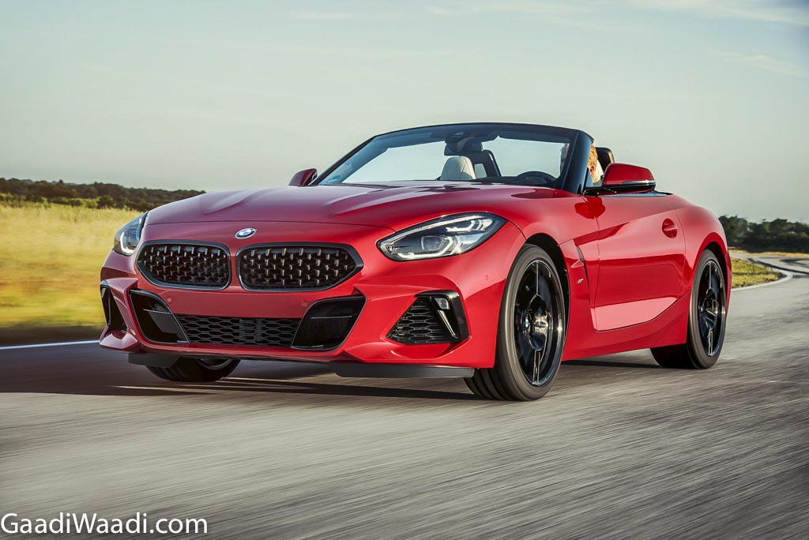
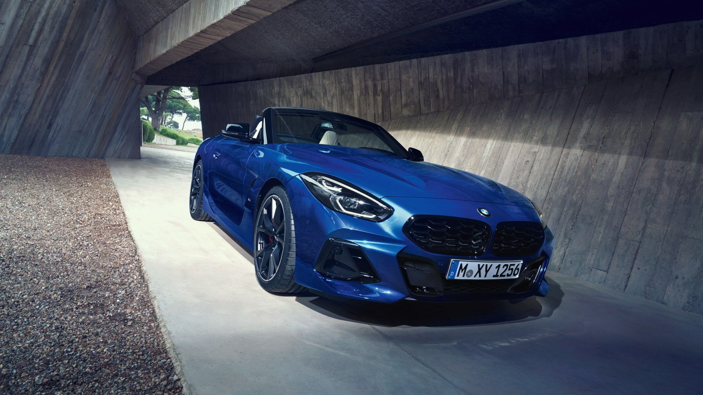
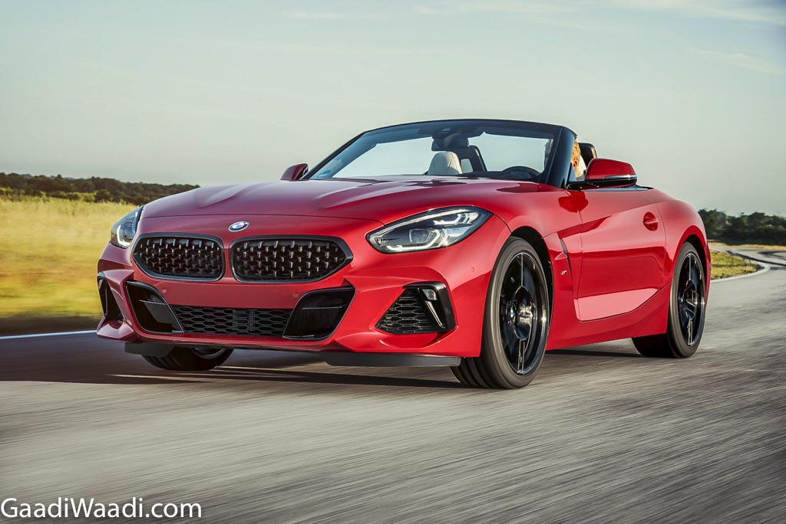
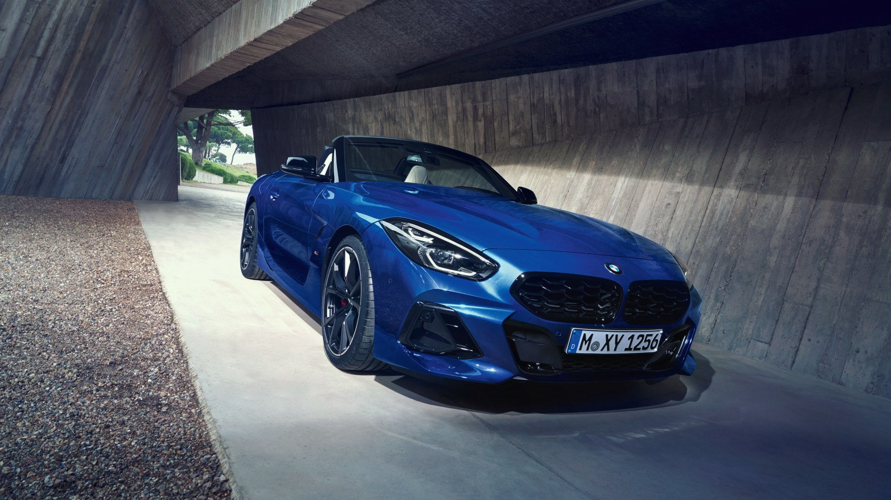

Bmwz4
- he Z4 M Coupé/Roadster was introduced in 2006 and is powered by the S54 straight-six engine shared with the E46 M3
- The S54 was also on the Ward's 10 Best Engines list for 2001 through 2004. The engine in the North American Z4 M models are rated at 330 hp (246 kW) at 7,900 rpm, 3 hp less than the North American M
- The Z4 M Coupé/Roadster was introduced in 2006 and is powered by the S54 straight-six engine shared with the E46 M3.
- S54 was also on the Ward's 10 Best Engines list for 2001 through 2004.[41] The engine in the North American Z4 M models are rated at 330 hp (246 kW) at 7,900 rpm, 3 hp less than the North American M3. In other markets, the power output is the same 252 kW (343 hp) as the M3. The engine had BMW double
- VANOS system and a compression ratio of 11.5:1. The torque generated by the engine amounted to 355 N⋅m (262 lb⋅ft) at 4,500 rpm. The torque was available from 2,500 rpm.
- The Z4 M uses hydraulic power steering, unlike the electric power steering used by the rest of the Z4 range.
- upé the faster M3 CS/CSL rack. Other changes include a wider front track, revised front suspension, wider non-runflat-tires (measuring 225/45 at the front, 255/40 at the rear), and steering geometry.[42] The brakes and the entire rear axle was too from the M3 CS/CSL
- The S54 was also on the Ward's 10 Best Engines list for 2001 through 2004.[41] The engine in the North American Z4 M models
.avif) 


